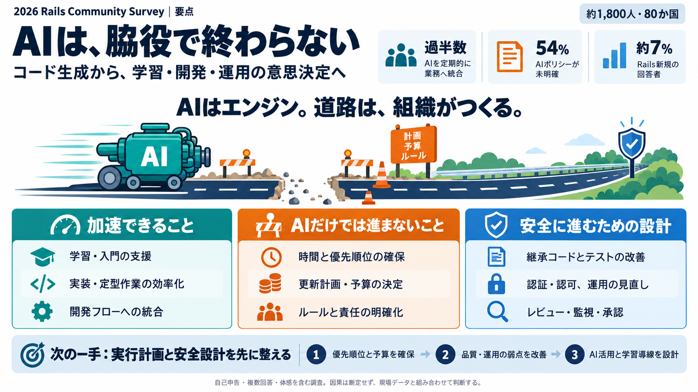

2026 Ruby on Rails Community Survey Results | Rails Developer
Rails version upgrade76% · 62% Ruby version upgrade71% · 58% AI & the app layer Adopted AI agents or agentic coding w…

Rails version upgrade76% · 62% Ruby version upgrade71% · 58% AI & the app layer Adopted AI agents or agentic coding w…
Natural language database queries. Rather than writing ActiveRecord queries, developers will increasingly describe what …
### Rails and AI Integration One of the defining technology trends of 2026 is AI adoption. Interestingly, the challeng…
Ruby 4.0 arrived in December 2025 with YJIT as the production default. YJIT delivers a measurable production speedup wit…
It also happens to help AI coding assistants. Because file locations and naming follow strict conventions, tools like Cu…